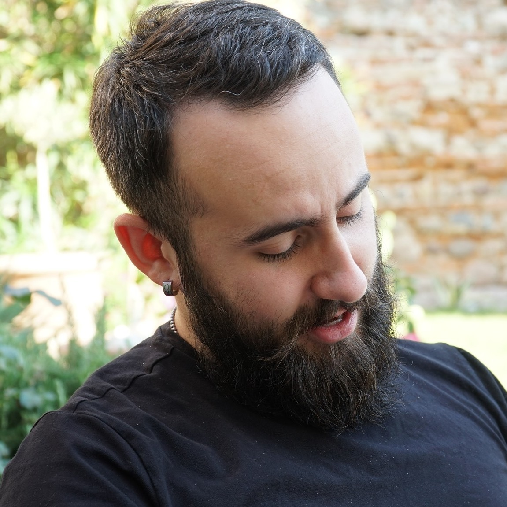

Age 27, currently in Verona, Italy.
Bachelor's degree in computer science @ University of Verona,
Italy
Favourite quotes:
"We are the Borg. Lower your shields and surrender your ships.
We will add your biological and technological distinctiveness to
our own. Your culture will adapt to service us. Resistance is
futile."
Professional Experiences
- Sep. 2022 - now: software developer @ BitMobility SRL
- Nov. 2020 - Aug. 2022: software developer @ Iotinga SRL
Skills
- Backend development via GraphQL or REST frameworks like ExpressJS
- Relational databases (Postgres, MySQL, MariaDB) and non-relational databases (AWS DynamoDB, CouchDB)
- Mobile cross-platform applications with React Native
- Front-end web development, in ReactJS, Flask and Angular
- AWS development and deployment tools
Languages
- Typescript/Javascript
- Python
- Java
- Rust
Interests and passions
- Everything Linux related
- Star Trek saga
- Lord of the Rings
- Mountain trekking
Side Projects
Here are my biggest side projects, more on Github- dispense-info-univr: a collection of essays and summaries I wrote as a student. Me and a good friend ended up writing a lot of LaTex stuff, and we decided to publish it to be free to download. Available only in italian.
- dotfiles: configuration files to run my current development environment, based on Sway, a tiling window manager for Wayland